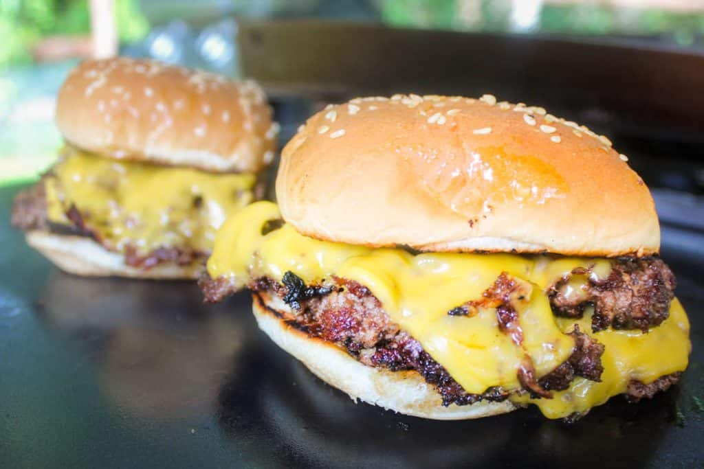

Blackstone Smash Burgers

Ingredients
- 2 pounds ground beef (recommend using Wagyu beef for extra flavor!)
- 6 Hamburger buns
- Seasoned salt to taste
- 12 American cheese slices
- Avocado oil for grill surface
- Additional hamburger toppings as desired
Steps
- Using a 1/3 cup measuring spoon, loosely pack ground beef and place meat balls on wax paper.
- Set out hamburger buns to have ready to toast on Blackstone grill.
- Preheat Blackstone grill to medium-high heat (around 425 degrees fahrenheit)as you want the meat to sear. Pick another section of grill and set to low for the hamburger buns.
- Using avocado oil, drizzle a small amount onto heated grill surface and spread with spatula.
- Place hamburger buns (cut side facing down) onto low heat section of grill.
- Place first meat ball down onto oiled grill surface, then press firmly for around 10 seconds with a cast-iron grill press.
- Lift grill press, then flip burger patty onto other side.
- Season patty with seasoned salt to taste.
- Cook another 15-20 seconds, then place American cheese slice on patty to melt.
- Plate toasted buns, then using spatula, place cooked patty with cheese onto buns.
- Repeat with remaining meat balls and buns you have made. Top with your favorite hamburger toppings and enjoy!
Home